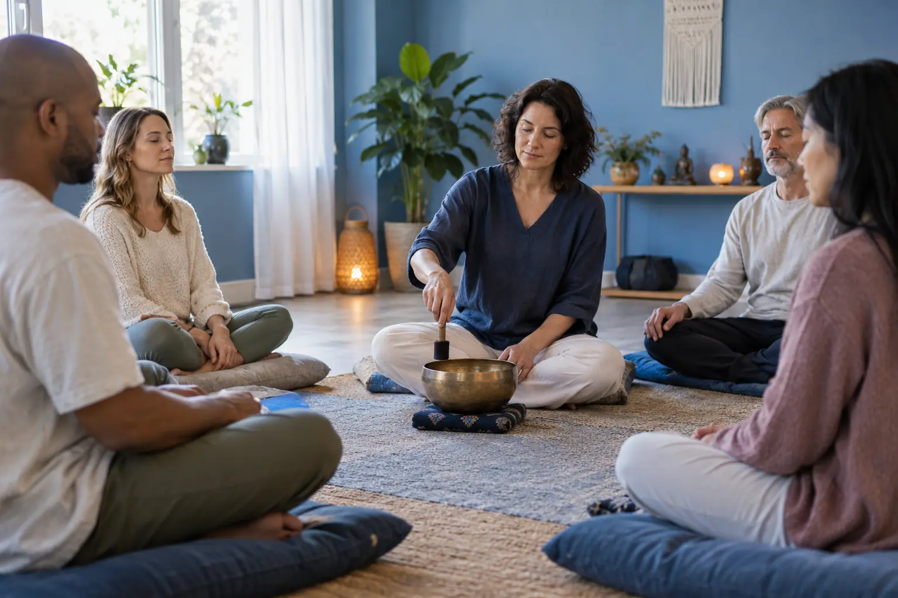

Meditacija, kvėpavimas ir garso seansai: formatai ir įrodymų ribos
Autorius: Madbeauty redakcija · Numatyta 2026 m. lapkričio 14 d. 10:00 (Lietuvos laiku)
Palyginkite meditacijos, kvėpavimo ir garso seanso struktūrą, dalyvavimo sąlygas bei tai, ką moksliniai duomenys leidžia teigti.

Meditacijos, kvėpavimo ir garso atsipalaidavimo seansai skiriasi tuo, į ką nukreipiamas dalyvio dėmesys ir kokios veiklos prašoma. Pavadinimas savaime nepasako tikslaus metodo, trukmės ar poveikio. Renkantis verta atskirai įvertinti praktiką, grupės ir aplinkos sąlygas bei tai, ar aprašyme nežadama daugiau, nei pagrindžia įrodymai.
Pirmiausia atskirkite praktiką nuo seanso sąlygų
Meditacija, kvėpavimo praktika ar garsų klausymas nusako galimą dėmesio kryptį. Seanso sąlygos – pavyzdžiui, ar vyksta individualiai, ar grupėje, kas veda užsiėmimą ir ar galima daryti pertrauką – yra atskiras pasirinkimo aspektas. Tas pats pavadinimas skirtingose vietose gali reikšti nevienodą programą.
- Praktika: ką daugiausia veikiate – stebite dėmesį, kvėpavimą ar klausotės garso?
- Vedimas: ar instrukcijos nuoseklios, ar dalis laiko skirta savarankiškai patirčiai?
- Sąlygos: kokia aplinka ir grupės dydis, ar galima pasirinkti patogią padėtį, nutraukti veiklą arba išeiti?
Trys seanso formatai
Meditacijos užsiėmimas
Meditacijos užsiėmime dėmesys gali būti kreipiamas į kvėpavimą, kūno pojūčius, garsą ar kitą vedėjo pasirinktą objektą. „Meditacija“ nėra vienas standartinis pratimas: apžvalgoje NCCIH aprašo skirtingas meditacijos ir dėmesingo įsisąmoninimo praktikas. Prieš rinkdamiesi pasitikrinkite, ar bus vedama žodžiu, ar daugiau laiko skirta tylai, ir ar galima nedalyvauti atskiroje užduotyje. NCCIH apžvalga apie meditaciją ir dėmesingą įsisąmoninimą.
Kvėpavimo užsiėmimas
Čia pagrindinis dėmesio objektas yra kvėpavimas, tačiau užsiėmimo pavadinimas neatskleidžia, kokios instrukcijos bus naudojamos. Vienur gali būti stebimas įprastas kvėpavimas, kitur vedėjas gali pasiūlyti konkrečią užduotį. Iš anksto išsiaiškinkite, ar privaloma sekti nurodymus, ar galima grįžti prie įprasto kvėpavimo ir kaip pranešti, jei norite sustoti. Šis tekstas nenurodo kvėpavimo technikos ar individualaus tinkamumo.
Garso atsipalaidavimo seansas
Šio formato centre yra garsas arba jo klausymasis, bet vien iš pavadinimo neaišku, ar tai įrašas, gyvas garsas, vedėjo balsas ar kelių veiklų derinys. Paklauskite, kas konkrečiai vyks ir kokios dalyvio veiklos tikimasi. Garsų rūšies ar seanso pavadinimo nereikėtų laikyti įrodymu, kad jis gydo sveikatos sutrikimą.
Kaip pasirinkti pagal savo poreikį
- Įvardykite, kokios patirties ieškote: vedamos dėmesio praktikos, dėmesio kvėpavimui ar ramaus klausymosi.
- Pasitikrinkite sąlygas: individualus ar grupinis formatas, instrukcijų pobūdis, aplinka ir galimybė praleisti užduotį.
- Įvertinkite ribas: ar paslaugos aprašymas aiškiai atskiria patirtį nuo sveikatos rezultato pažado.
Iliustracija: jei norite aiškių žodinių nurodymų, pirmiausia ieškokite užsiėmimo, kur aprašytas vedimo būdas, o ne vien žodžio „meditacija“. Jei norite klausytis garso, išsiaiškinkite, koks garsas naudojamas ir ar seanse numatyta tyla. Tai pasirinkimo pavyzdys, o ne konkretaus teikėjo pasiūlymo aprašymas.
Patirtis nėra ligos gydymo įrodymas
Meditacijos ar atsipalaidavimo seansas gali būti siūlomas kaip savijautos užsiėmimas, tačiau jo pavadinimas neįrodo, kad jis gydo nerimą, depresiją ar kitą sveikatos būklę. NCCIH nurodo, kad dalies meditacijos poveikių įrodymai dar preliminarūs ir ne visi poveikiai patvirtinti; taip pat aprašoma įvairių atsipalaidavimo metodų tyrimų ribotumų. Todėl venkite garantijų, universalių rezultatų ar pažado pakeisti sveikatos priežiūrą. NCCIH apžvalga apie atsipalaidavimo metodus ir jų įrodymus.
Jei seanso metu pasidaro nejauku
Dalyvavimas neturėtų reikšti, kad privalote tęsti veiklą, kuri jums kelia diskomfortą. Galite paprašyti pertraukos, pakeisti padėtį ar pasitraukti iš užsiėmimo. Jei norite išvengti netikėtumų, prieš pradžią išsiaiškinkite, kaip apie tai pranešti. Jei savijautos sunkumai rūpi ir už seanso ribų, kreipkitės į sveikatos specialistą.
Užsiėmimas ar sveikatos pagalba?
Užsiėmimo aprašymas turėtų paaiškinti jo formatą ir dalyvavimo sąlygas. Jei ieškote pagalbos dėl simptomų ar sveikatos būklės, šis gidas negali nustatyti, kuri praktika jums tinka: aptarkite tai su atitinkamu sveikatos specialistu. Savijautos užsiėmimo pasirinkimas ir sveikatos konsultacija yra skirtingi sprendimai.
Susiję gidai
Šaltiniai
- NCCIH · meditacija ir mindfulness · www.nccih.nih.gov
- NCCIH · atsipalaidavimo metodai · www.nccih.nih.gov